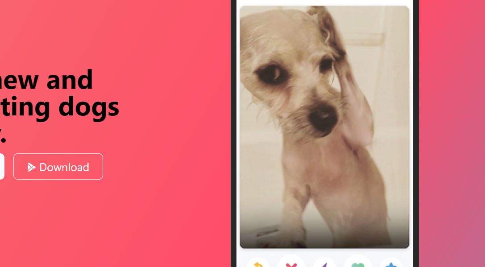

Tinder For Dogs
June 2024

Overview
- TinDog is a website designed to connect dog owners with other dog owners, helping their pets meet new friends. The site offers various features and plans to facilitate this process.The site is designed with a clean and modern look, utilizing Bootstrap for a responsive layout that works well on various devices. The use of icons and images helps convey the app's features and benefits visually. It has a user-friendly interface, various pricing plans, and strong testimonials.